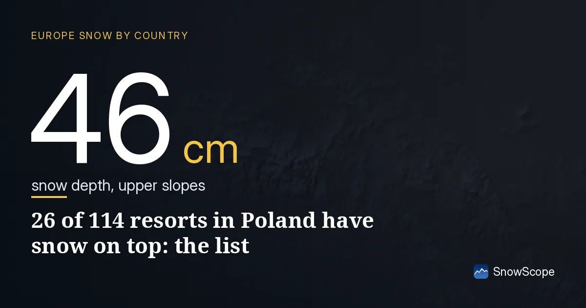
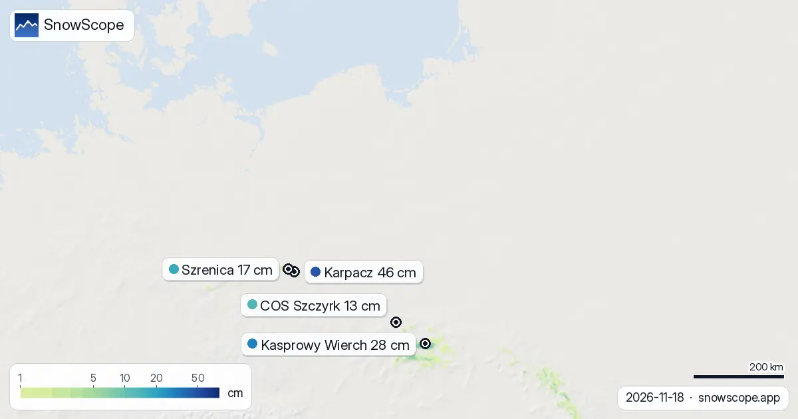

26 of 114 resorts in Poland have snow on top: the list
26 of the 114 resorts in Poland have snow on their upper slopes today. Karpacz leads with 46 cm.
See the live snow forecast for Karpacz in the SnowScope appSnow depth, powder alerts and the 3D map, free.
Which resorts have snow
Snow on the upper slopes is not the same as open runs: lifts open when the base is deep enough to groom, and the resort decides that.
590 km² of snow-covered ground in Poland this Wednesday, down 580 km² on yesterday. In other words, 5 % of the mapped high ground is white.
| Resort | Snow depth | New snow, 72 h | Coming, next days | Top |
|---|---|---|---|---|
| Karpacz | 46 cm | 7 cm | 12 cm | 1,350 m |
| Kasprowy Wierch | 28 cm | 13 cm | 16 cm | 1,958 m |
| Szrenica | 17 cm | 6 cm | 10 cm | 1,306 m |
| COS Szczyrk | 13 cm | 2 cm | 4 cm | 1,244 m |
| Dwie Doliny Muszyna-Wierchomla | 12 cm | 0 cm | 1 cm | 987 m |

Best resorts right now
At the top of the list, Karpacz reports 46 cm.
Next on the list: Kasprowy Wierch (28 cm), Szrenica (17 cm), COS Szczyrk (13 cm) and Dwie Doliny Muszyna-Wierchomla (12 cm).
At Karpacz: 7 cm of fresh snow over three days, 12 cm more expected by Saturday 21 November.
At Kasprowy Wierch: 13 cm of fresh snow over three days, 16 cm more expected by Saturday 21 November.
Snow lies on the upper slopes of 26 out of 114 resorts in Poland.
The rest of the shortlist: Szrenica: 17 cm on top, 6 cm in three days, 10 cm expected; COS Szczyrk: 13 cm on top, 2 cm in three days, 4 cm expected; Dwie Doliny Muszyna-Wierchomla: 12 cm on top, 0 cm in three days, 1 cm expected.

How deep it is, height by height
Height makes the difference: between 500 and 1,000 m, under 1 cm on average, 2 % covered; between 1,000 and 1,500 m, 2 cm on average, 37 % covered; between 1,500 and 2,000 m, 19 cm on average, 100 % covered.
The next days
Over the next three days up to 10 cm is expected, and up to 13 cm over the week.
Thursday 19 November stands out, with up to 5 cm in a day.
Further out, days 8 to 14 show up to 22 cm on the snowiest slopes.
The week in numbers
Snow cover in Poland over the last days: 16 November 1,170 km²; 17 November 1,170 km²; 18 November 590 km².
The deepest resort changed hands 1 times this week.
What it means on the slopes
The snow is retreating uphill, so plan on the higher lifts and avoid the low valley runs.
With more snow in the forecast, the next days should improve things further.
Snow on the ground
Mild days have cost 530 km² since the 1,120 km² of a week ago. The snow line sits near 1,200 m.
New snow in the last three days
Three-day totals peak at 6 cm, around the Tatras, the Karkonosze and the Beskids.
About 150 km² received at least 5 cm.
The neighbours today
For comparison, the neighbours on the same day: Slovakia: 10 % white, deepest Ski centrum Dedinky with 42 cm, up to 15 cm in the week ahead; Czechia: 0 % white, deepest Figura Praděd with 15 cm, up to 10 cm in the week ahead.
Planning a day on the snow
Above 1,500 m the ground is almost fully white (100 % covered), so runs up there have a continuous base.
Between 1,000 m and 1,500 m the cover is patchy, about 37 % white: expect grass and stones between the snow.
Below 1,000 m the slopes are still almost bare.
If you can choose the day, go after Thursday 19 November: the fresh snow then has time to settle and the roads to be cleared.
Tips for skiers
- Fresh snow on a cold base sticks badly: take care on steep slopes.
- Morning snow is firm after a clear night: wait for the sun on south faces.
- Snow above the tree line can be wind-packed: watch the ridges.
About these numbers
Resort snow depths are the deepest snow on the resort's upper slopes from the SnowScope snow model (about 1 km, run of 18 November); they are estimates for an area, not a measurement at one point. Station values are measurements on the date shown. Forecasts can change. Always read the official avalanche bulletin before going off-piste.
Cite this report
For research, teaching or the press: the numbers and charts are free to reuse under CC BY 4.0 with this citation.
SnowScope (2026), 26 of 114 resorts in Poland have snow on top: the list, https://snowscope.app/blog/en/2026/11/poland-resorts-with-snow-18-november-2026.html, accessed 2026-11-18
SnowScope (Atlas Labs). (2026, November 18). 26 of 114 resorts in Poland have snow on top: the list. SnowScope snow reports. https://snowscope.app/blog/en/2026/11/poland-resorts-with-snow-18-november-2026.html
BibTeX
@misc{snowscope2026polandresortswithsnow18n,
author = {{SnowScope (Atlas Labs)}},
title = {26 of 114 resorts in Poland have snow on top: the list},
year = {2026},
month = nov,
howpublished = {\url{https://snowscope.app/blog/en/2026/11/poland-resorts-with-snow-18-november-2026.html}},
note = {Published 2026-11-18 11:33 UTC; accessed 2026-11-18}
}· CC BY 4.0 · Methods, data and tools →
Karpacz: snow and temperature by height, this winter vs last (tools) →
Follow Karpacz
Free: a message when fresh snow is coming, and the forecast every morning.
More snow reports

We compared the snow on 10 November with each winter's deepest snow at 46 ski resorts over 46 winters. A snowy start helps, but less than many skiers think.

December snow odds from 46 winters and checked day prices: Ski Cooper $49, Les 3 Vallées €75.70, Oukaïmeden no official tariff. Where a cheap December ski day works.

Himalaya snow cover in November 2026 from NASA MODIS: snow on 610,409 km² of ground above 2,000 m between the Hindu Kush and Bhutan, half the clear ground white from about 4,800 m in Nepal and 3,600 m in the Karakoram. The NDSI explained, plus shadows, cloud and the low autumn sun.